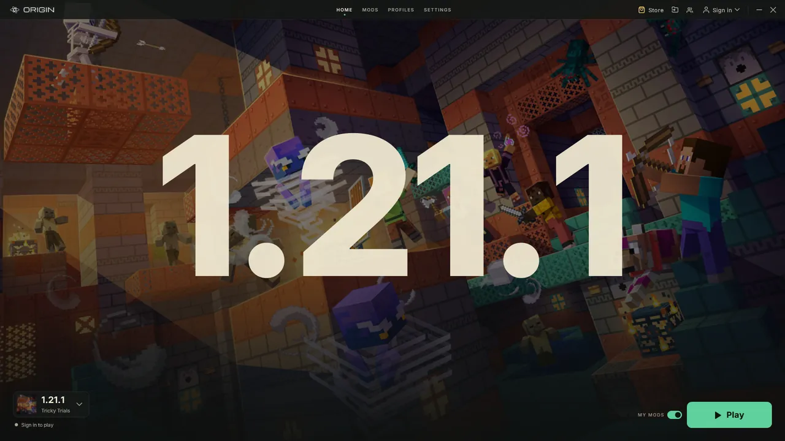
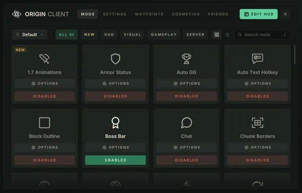

Pick a version. Press Play.
Origin is a free Minecraft launcher and in-game client. It sets up the mods, shader support and its own clean menus for each of 26 versions, from 1.8.9 to 26.3.
Also for Mac Beta and LinuxLive in your browser: Minecraft's own blocks, shader lighting
The launcher does the setup.
Pick a Minecraft version and press Play. Origin installs what that version needs (the game, its loader, Origin's own client and the shader and performance mods) and then starts it.

Version picker Every supported version in one list, grouped by update.
The version you're on Shown big, over that update's own artwork.
Play Installs anything missing, checks it, starts the game.
Same look in game.
The title screen, loading screens, Mod Menu and HUD are Origin's own, and they look the same on each version.


Also built in
Your mods stay yours
Drop your own mods in. If one does the same job as an Origin mod, yours loads and Origin's steps aside.
Several accounts at once
One game window per account, side by side, each with its own worlds and settings.
Shaders
Iris and Sodium on each version (OptiFine on 1.8.9), with a shader browser in game.
Settings come with you
Keybinds, mod settings and HUD positions follow you between versions.
FPS Coach
Finds what's costing you frames and suggests what to change.
Crashes name the culprit
If a mod stops the game starting, Origin says which one when it can.
26 versions, from 1.8.9 to 26.3.
Each one is its own build, made for that version's code. The menus, HUD and mods look the same on all of them.
| Family | Update | Releases |
|---|
Mac Beta: 1.8.9 to 1.18.2 run through Rosetta on Apple Silicon.
Get Origin.
Free for Windows 10 and 11, Linux, and Mac as a beta. Origin keeps itself up to date.
Download for WindowsOther systems
Opening it on a Mac for the first time
The Mac version is new, so macOS doesn't know it yet and asks once before it opens.
- Open the download and drag Origin into Applications.
- Open Origin from Applications. macOS says it can't check it: click Done.
- Open System Settings, then Privacy & Security, scroll down and click Open Anyway next to Origin.
- Click Open Anyway again and type your Mac password. From then on it opens like any other app.
Older Minecraft versions (1.8.9 to 1.18.2) run through Rosetta on Apple Silicon. Origin offers to install it the first time you need it.
- Free
- Windows 10 & 11
- Mac Beta (macOS 15+)
- Linux 64-bit
- Updates itself